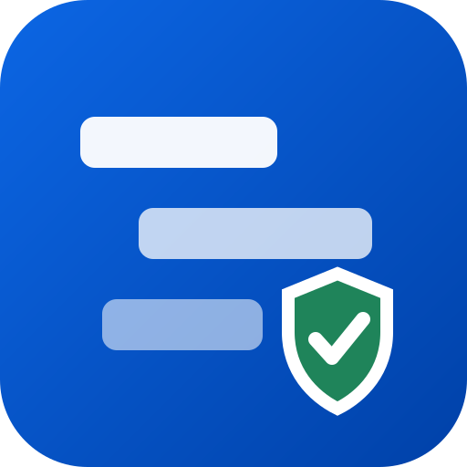

The Gantt chart for Jira that never touches your data without asking. Drag freely, review the exact diff, sync only what you confirm — and undo in one click.
Because too many timeline tools rewrite dates on install, sync changes you never meant to make, or lose your structure in an update. SteadyGantt is built around one promise: Jira stays untouched until you say so.
Epic → Task → Subtask nesting, dependency arrows from issue links, epic envelopes derived from children.
Canvas rendering with a performance budget enforced in CI. First paint in about a second, instant reopen from local cache, smooth with thousands of issues.
Zoom, scroll, collapsed groups, panel width — restored exactly as you left them, on any device.
Plan the week in hours or the quarter in months, with a today marker and weekend shading.
One click to a clean image of your timeline for slides and status reports.
No external servers, no third-party calls, no analytics. Eligible for the Runs on Atlassian program.